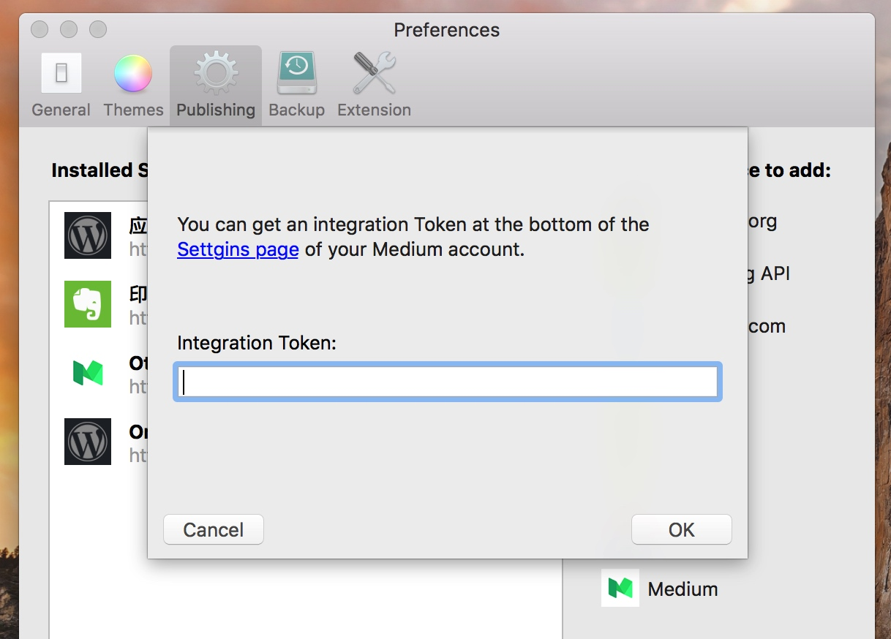

MWeb 1.8.3 release! Publish to Medium, fix LaTex preview bug, Editor improved
Publish to Medium
Go to Preferences - Publishing to add publish to Medium service.

Click Settings page go to your Medium Settings page to create an Integration Token.

When the Integration Token created, copy it and paste to MWeb Integration Token field, click OK button.
Click top right corner Share button, you will saw publish to Medium service is added.
Medium API is unsupported update, so just publish only. Local image upload also unsupported. Luckily, you can enable Upload local image to Google Picasa when the publish to blogger service is added.

Others
- Fix LaTex in editor preview and $$ syntax not work bugs.
- Fix footnote ref bug.
- Better performance for Editor